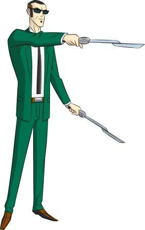
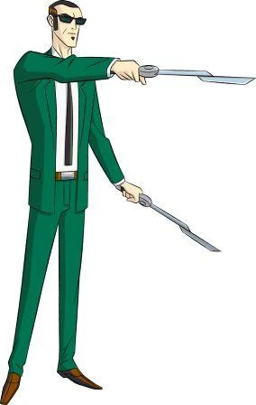
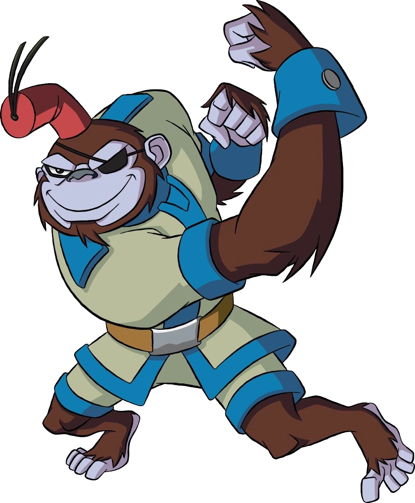
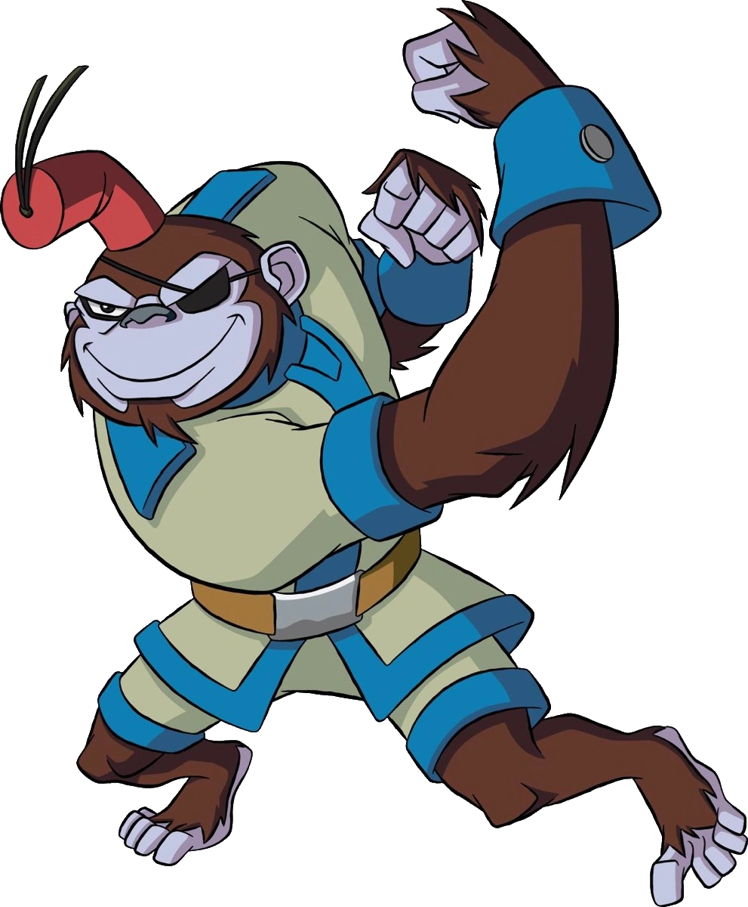
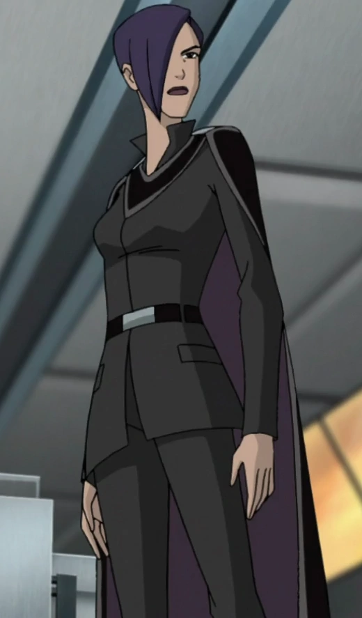
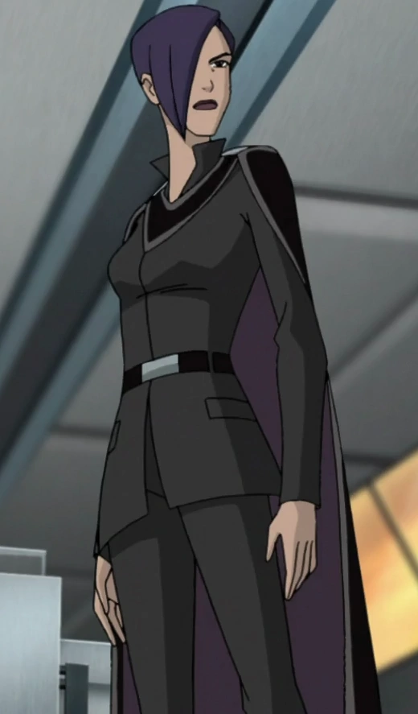

GENERATOR REX

sayfada sizlerle birlikte generator rex hakkınca konuşacağız
sayfada sizlerle birlikte generator rex hakkınca konuşacağız
4 tane zengin zübbe ölümsüz olmak ister. bunun içinde makine icat edilmesine karar verirler. Bu işide Rex'in ileri mühendis olan anne babasına ve ekibine devrederler. ama bu zenginlerin aceleci tavırları bir dünya felaketine sürüklenir, ama bilmezlerki bu felaketi Rexin ta kendisi çözecek, ve ölümsüzleğe giden anahtar kendisidir.
 


 

 
